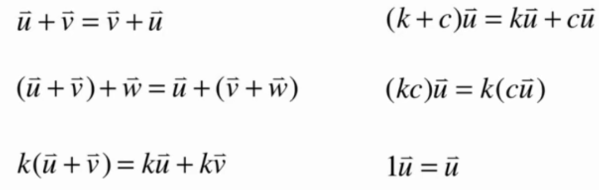
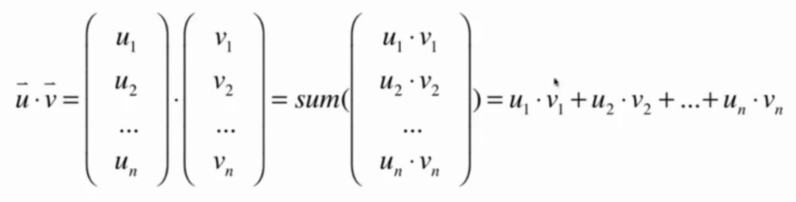

线代个人理解 @
简介 @
线性代数是从从研究一个数，到研究一组数的数学。
一组数的基本表示方法为向量，而向量也是线性代数研究的基本元素。
向量可以在多个维度表示一个 Object 的基本属性，方便我们数学的研究。
向量一般分为行向量与列向量，但在通常的教材和论文中，向量一般默认指列向量。
ps ： 由于印刷问题，列向量可以表示为(num1,num2)T。
向量的运算 @
向量的加法 @
如果两个向量(num1,num2) + (num3,num4),那么得到的结果为(num1+num3,num2+num4)。
向量的加法可以表示为在 n 维坐标中，继续增加 n 维度的单位。
例如(5,2)T + (2,5)T.
表示先在 x 维度上增加 5 个单位，在 y 维度上增加 2 个单位。再在 x 维度上增加 2 个单位，再在 y 维度上增加 5 个单位。那么在 x 维度总共有 7 个单位，在 y 维度总共也有 7 个单位，进而得到的向量的结果为(7,7).
它可以表示 object 在两个维度上的信息。
向量的数量乘法 @
简单来说乘法只是加法的推广和延申，那么向量的乘法同样也表示在 n 维度的坐标中，重复增加 n 维度个单位。
向量运算的基本性质 @

向量的长度 @
二范数的概念：表示向量每个维度的平方相加再开二次方。例如勾股定理
那么向量的长度实际上就是求向量的二范数,也可以叫做求向量的模
单位向量 @
单位向量是指这个向量去乘这个向量的模分之一，也就是保持向量的长度为 1.所以单位向量的模永远为 1，它只表示方向。
根据向量 u 求出单位向量 u1 的过程，也被称为是归一化，规范化(normalize)。
二维空间中，有两个特殊的单位向量 e1 = (1,0),e2 = (0,1)。
只由 0，1 组成的单位向量叫做，标准为单位向量(Standard Unit Vector)。
n 维空间有 n 个标准为单位向量。
两个向量相乘 @

两个向量相乘，结果为一个标量，这个标量代表两个向量的模相乘，再乘向量夹角的 Cos 值。这种乘法更严格的来说是两个向量的点乘，或者两个向量的内积。
向量的点乘也可以看作只有一行元素的矩阵与向量相乘。